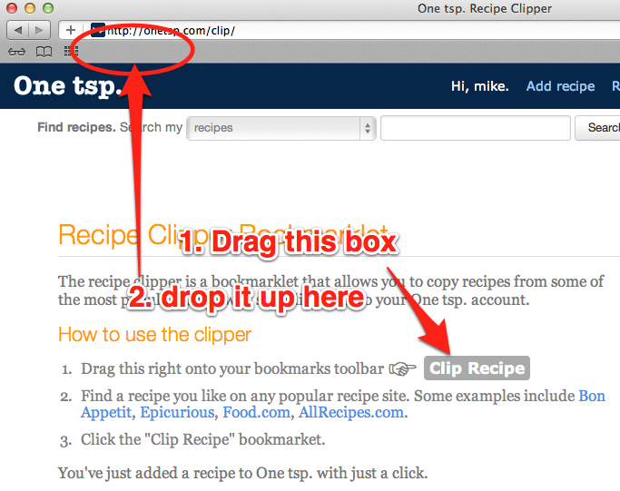
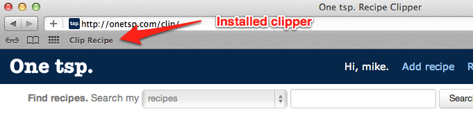
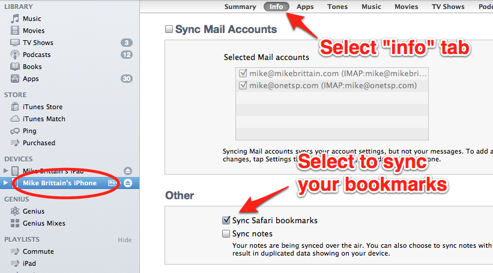
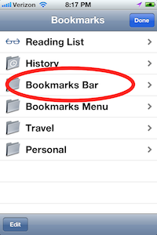

The easiest way to install the Recipe Clipper on your iPhone or iPad is to do this from your desktop computer. You can install the bookmarklet in the Safari web browser and then sync your bookmarks to your iOS device.
Open the Recipe Clipper page in your browser.
Drag the bookmarklet (looks like a grey box on the page) onto your bookmarks toolbar. If you do not see your bookmarks toolbar, you may need to select "Show Bookmarks Bar" from the "View" menu for Safari.
The installed Recipe Clipper should appear in Safari as shown here:
Connect your iPhone or iPad to your computer with the provided USB cable.
Select your iOS device (iPhone or iPad) from the Devices panel in iTunes.
Select the "Info" tab.
Check the "Sync Safari bookmarks" option.
Click "Sync" button in iTunes to sync all content (including your bookmarks) to your iPhone or iPad.
You will find the new bookmarklet within the "Bookmarks Bar" menu within mobile Safari.
